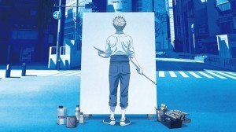

Aoi Period is one of the most-anticipated series coming out this year. It's about a boy, Yatora Yaguchi. A bored high-school student who goes around life just going through the motions, doing nothing he considers unnecessary. One day he sees a painting and it lights a spark inside him, drawing him into the world of art.
The first episode depicts him as not quite an honor student, as he smokes cigarettes and plays around in class. However, it becomes aparent that this is nothing more than a facade. He puts imense effort into his studies and is frustrated when people label him a genius, as he feels it diminishes his hard work. He cares about stability after all, and getting into a good university is the first step to achieving that. So when he puts effort into capturing his feelings into a painting, on a whim, for the first time, he feels a rush at being finally acknowledged. He wants to go to art school, despite how expensive it is. Despite how competitive and despite the fact that his parents might object. This transformation is just the first of many as he figures out his place in the world of art.
Evangelion 3.0 + 1.01: A Satisfying Ending to the Journey
By Kathilee Ledgister, September 29, 2021
Nine years. That is how long it took to finally conclude a series some would argue is a masterpiece. In typical fashion for this franchise, I did not understand 75% of it, but I can say with 100% certainty that it is a fitting end. Was it perfect? No. But with every frame of animation, every attention to detail, every piece in the soundtrack, one can't help but appreciate how much love went into this passion project.
After years and years of watching protagonist, Shinji Ikari, suffer from depression that mirrored the creator, Hideaki Ano's own, finally, finally, we were able to see him get his happy ending. He's gone from a conflict-averse, self-centered, depressed, teenager who throws temper tantrums when faced with his powerlessness against his scheming father to a man who isn't afraid to confront said father. A man who tries his hardest to look out for his friends and no longer shies away from his responsibilities. Someone who finally became the 'hero' and saved the world. It was a heart-warming bonus to see him choose a partner who was more condusive to a healthy relationship rather than the toxic couplings of his youth. To watch him joke around with Mari-Illustrious Makinami - who was modelled after Ano's own wife - and living life without constant despair was uplifting, to say the least. It feels good to know that the creator himself was in a place where he could write such an ending.